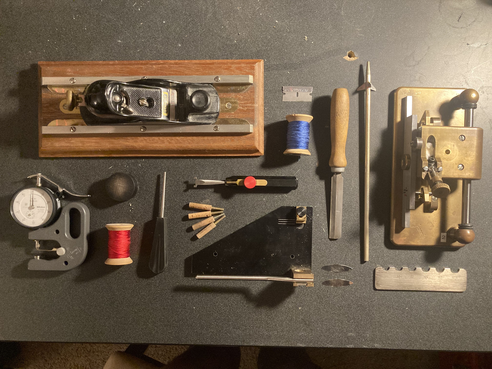
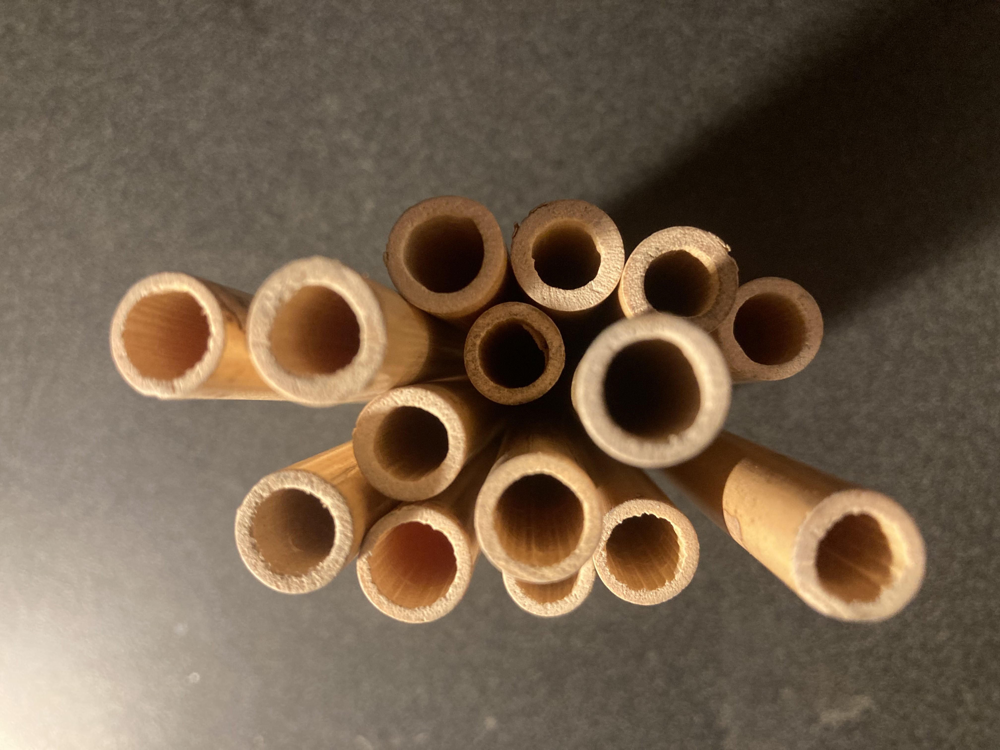
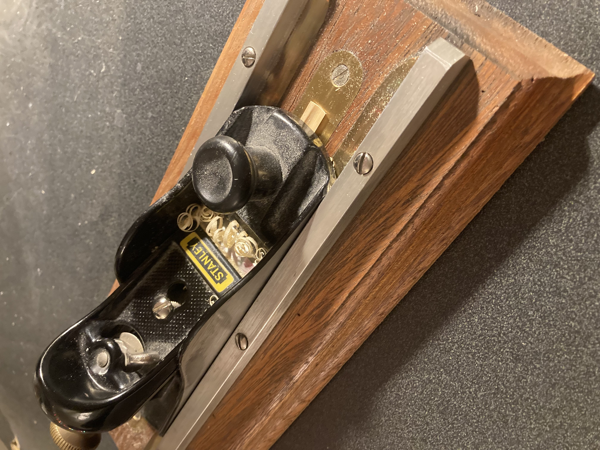
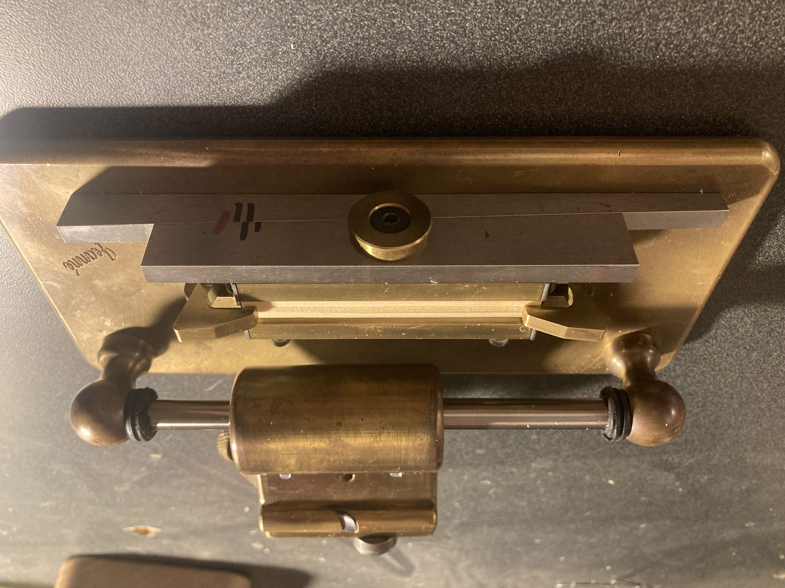
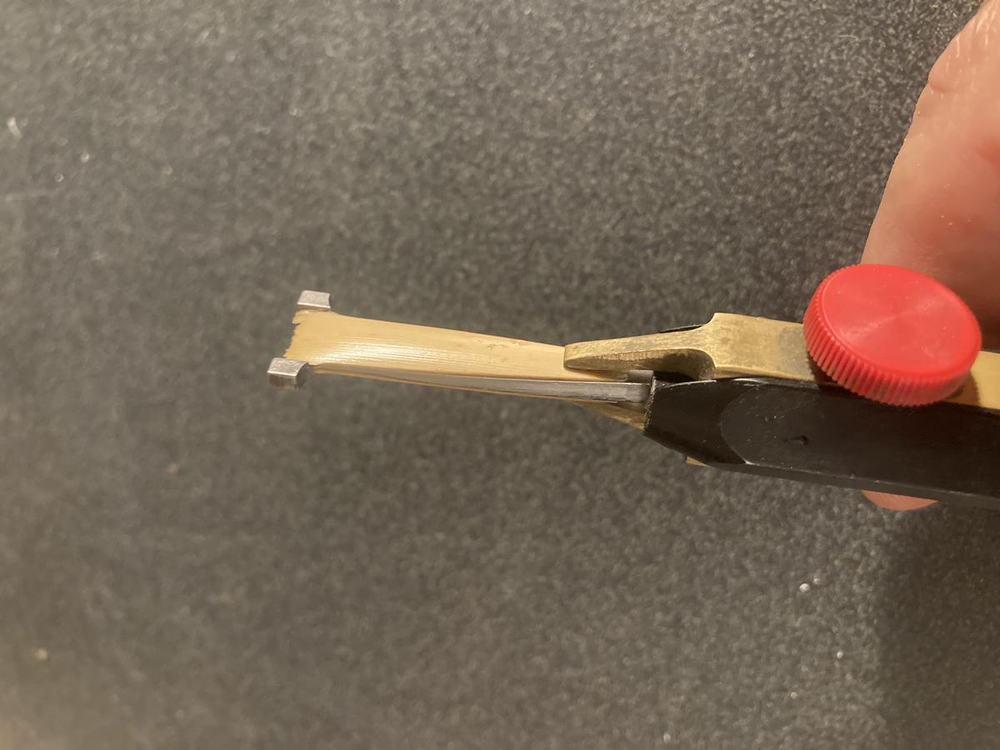
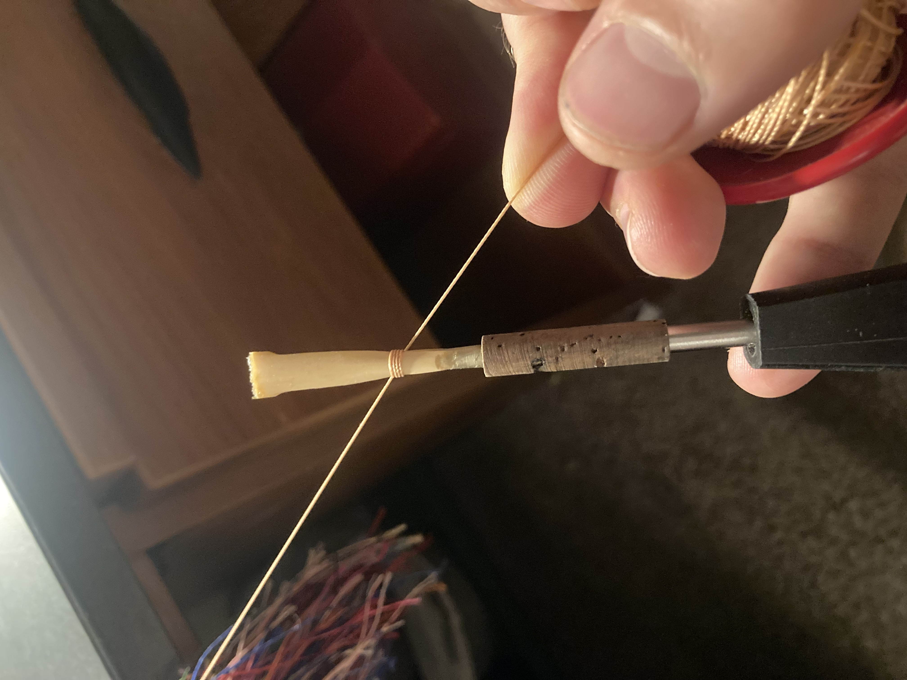
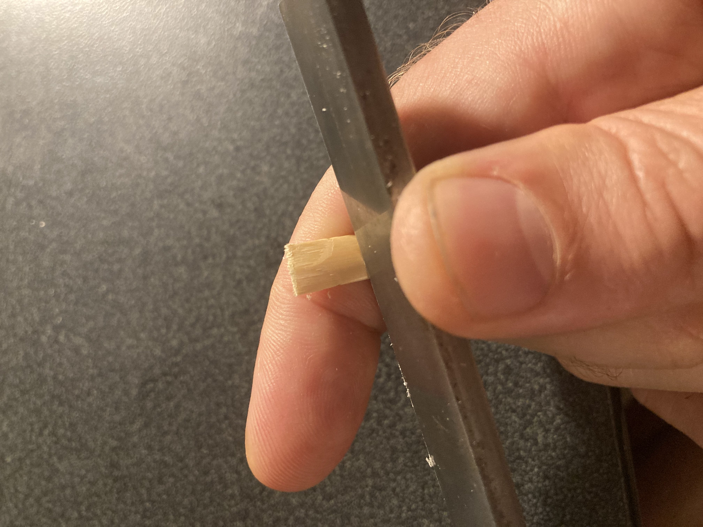

Every reed begins as a hollow piece of cane and ends as a precisely crafted instrument — the result of days of careful, skilled work by hand.

Six steps, years of practice — this is how a reed gets made.

It all starts with tube cane — hollow cylindrical sections of Arundo donax, a reed grass grown primarily in southern France and other Mediterranean regions. Not all cane is usable. Each piece is carefully measured for the correct diameter and inspected for straightness and density. Many pieces get discarded before the work even begins. The quality of the finished reed depends entirely on the quality of the cane selected at this stage.

Once selected, the tube cane is split lengthwise into pieces and run through a planer — a precision tool that shaves the inner surface of the cane down to a consistent thickness. This step prepares the cane for gouging by removing excess material and creating a flat, even surface. The planer has to be set with great accuracy — too much material removed and the cane becomes too thin before gouging even begins.

The gouger is one of the most important and expensive tools in reed making. It removes material from the inside of the cane with great precision, thinning it to a specific profile that determines how the finished reed will respond and vibrate. The exact thickness at the center and edges of the gouge affects everything from intonation to flexibility to tone color. Getting this right is essential — and it takes years of experience to know what to look for.

The gouged cane is now shaped into the distinctive tapered form of the reed blade using a shaper tip — a steel template that defines the exact outline — and a razor blade. The shape determines the width and taper of the finished blade, which directly affects how the reed responds across different registers and dynamic levels. Different shaper tips produce subtly different results, and the choice of shape is part of what gives each reed maker's reeds their distinctive character.

The shaped cane is soaked in water to make it pliable, then folded and carefully tied onto a staple — the small metal tube with a cork base that connects the reed to the oboe. The tying process requires precision: the cane must be centered, the thread wrapped at exactly the right tension, and the reed must be straight. Any misalignment at this stage affects the reed's playability and can't easily be corrected later. Once tied, the reed is ready to be scraped.

The final step is scraping — and it's the most time-consuming of all. Over a minimum of three days, the reed is scraped with a reed knife in careful, deliberate strokes, gradually removing tiny amounts of cane from specific areas of the blade. Each scrape changes how the reed responds: the heart, the tip, the sides, the back — each area affects a different quality of the reed's sound and feel. The reed is tested constantly throughout, and adjustments are made based on how it plays. This is where experience and intuition matter most, and where a good reed maker's craft truly shows.
Each reed that leaves here has been through all six of these steps — carefully, patiently, by hand. That's what makes the difference between a reed that fights you and one that lets you play.
Shop Reeds